Let R be a differential ring with n commuting derivations
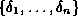
and let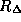
be the ring of differential operators in the derivatives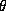
of with coefficients in R.Let
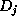
=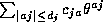
be a linear partial differential operator of order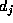
in for all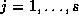
and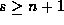
. Let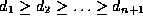
and let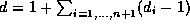
.In 1994 the author gave the notion of left and right differential resultant
of such differential operators with respect to an element
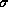
in the symmetric group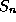
in the case s = n+1 and such notion was extended to the more general case in 1996.The notion of differential resultant extends the analogous one given by Berkovich and Tsirulik in 1986 in the ordinary case and it gives necessary conditions on the coefficients of the operators and some of their derivatives, in order that the system {
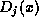
: } has a nonzero solution.Such differential resultants where defined as determinants of submatrices N of maximal rank in a
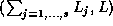
-matrix RM (respectively LM) associated to the operators and their derivatives until order d, where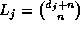
for all j and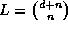
.In this paper it is shown that if we consider the upper triangular form T(RM) of RM (respectively T(LM) of LM) using only row operations, then the differential resultants are divisors of the entries of in the last column and in the rows with only a nonzero entry. Furthermore, if such differential resultants are all zero, then a triangular form for the system is provided. Unfortunately the corresponding system is not always completely integrable i.e. autoreduced and coherent, on the other hand such triangular form is useful for finding the integrability conditions.